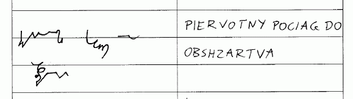
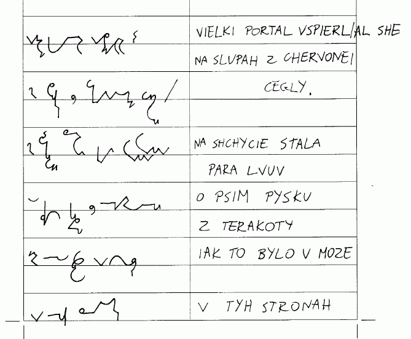

International
InternationalPolskie Teeline
2010-11-22 | autor: flamenco108Czy możliwe jest ułożenie systemu stenograficznego podobnego do Teeline, ale dopasowanego do polskiego? Jak już wspominałem chyba, polski jest chyba najtrudniejszym językiem na świecie. Równocześnie występuje w nim 45 samogłosek (z dokładnością do kilku, zależnie od szkoły), niesłychana mnogość reguł gramatycznych, typowa dla języków słowiańskich oraz niesamowita elastyczność polegająca na zdolności do natychmiastowej adaptacji wyrazów z innych języków.
Niemieckie Teeline
My nie musimy, jak Niemcy, tworzyć nowych słów na nowe pojęcia, bierzemy je od sąsiadów, gotowe, dopracowane, i w ciągu jednego pokolenia zamieniamy w swój wyraz. Wyjątki można znaleźć w zasadzie dwa: kakao i radio. Jeśli chodzi o kakao, to sam od dziecka słowo to odmieniam, choć Narzędnik nie brzmi zbyt wyjściowo: kakale. Ale słowo radio już tak miło się nie odmienia, więc, jak to Polacy, mamy tendencję do okrężnego rozwiązywania tego problemu, co po angielsku o wiele mądrzej brzmi: workaround.
Ale odbiegłem od tematu.
Toczyłem ongi (i liczę, że wrócimy do tematu) dyskusję z Eugeniuszem Lazianem, internacjonalnym Ormianinem, pisarzem, poliglotą, esperantystą (czyli krótko mówiąc: niezłym geekiem), który używa Teeline nie tylko do angielskiego, ale też do niemieckiego, a nawet do rosyjskiego. Na swoich stronach ma też opublikowane teksty piosenek Beatlesów w oryginale oraz przymiarki innych Niemców (?) do tego systemu.
Oto przykład transkrybcji na Teeline słynnego wiersza Lermontowa “Bieliejet parus adzinokij” czyli “Bieleje samotny żagiel”. Kto jeszcze liznął w szkole rosyjski, ma szansę odcyfrować, co tu na tym obrazku zostało napisane… Jak widać, Eugeniusz nieźle sobie radzi.
Bieliejet parus
Zachęcony przez Laziana, spróbowałem swoich sił w Teeline po polsku. Nie łudźcie się, nie od razu się to udaje, trzeba trochę postudiować. Podręcznik bardzo się przydaje. Angielska wersja darmowa dostępna jest np. tutaj, albo tutaj.
Trudno mi ocenić, jak to wyszło, moim zdaniem nie najlepiej. Żeby pisać w Teeline, trzeba najsampierw dokonać jakiegoś skrótu - a tu ja osobiście odczuwam opór i zgłaszam sprzeciw. Polska język trudna język est. Nie uczą nas skrótować, zatem nie ma standardu, który np. w Anglii buduje się już kilkaset lat.

Litwo, ojczyzno moja...
Zatem od początku uważałem, że system stenograficzny dla języka polskiego powinien w swojej długiej, podstawowej formie pozwolić na pełny zapis słów, bez przymusowych skrótów. Tymczasem Teeline jest systemem opartym o znaki blokowe (po naszemu mówi się “drukowanymi”) i zgodnie z angielskimi normami ma bardzo ograniczone tworzywo graficzne. Zatem, choć wydaje się ładny, pytanie, czy jest przekładalny bez dużych poprawek na język polski? Moim zdaniem - wykluczone.

Prawie sto lat temu pewien pan o nazwisku Sabowski dokonał porównania liczby wyrazów o danej liczbie sylab między niemieckim i polskim: wyszło, że począwszy od wyrazów dwusylabowych, w polskim mamy tym więcej wyrazów, im więcej jest w nich sylab. Wiadomo, że podobny stosunek występuje między niemieckim i angielskim, z tym że to angielski tym razem jest bardziej oszczędny.

Zatem przeniesienie Teeline “żywcem” na polski, czy też wprowadzenie do systemu niewielkich, kosmetycznych poprawek, moim zdaniem nie przyniesie zadowalających rezultatów. Aby stenografia po polsku stała się rzeczywiście szybka i oszczędna, wymaga, niestety, więcej pracy, niż po angielsku. Wyobrażam to sobie tak: po opanowaniu pewnych podstaw student zostaje zachęcony do używania systemu w praktyce. Robi to w ten sposób, że używa stenografii wszędzie tam, gdzie może, a gdzie mu wiedzy brakuje, wstawia słowa pismem długim. W miarę, jak rośnie jego wprawa, rośnie też potrzeba, by zastosować więcej sprytnych sztuczek, które oszczędzą pracy przy pisaniu. To skłania do opanowania kolejnych rozdziałów podręcznika. W ten sposób, stopniowo, można opanować wszystkie niezbędne skróty i złożenia.
Jak tylko skończę robić pierwszy system, na bazie doświadczeń zabiorę się za polskie Teeline…
2010-11-22 autor: flamenco108